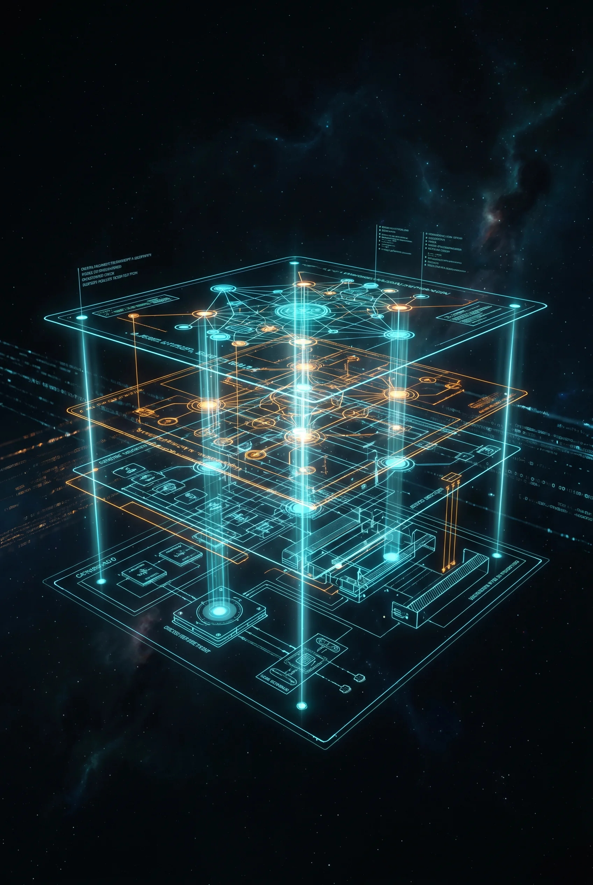

Tour Completo pelo IOAID, SHO e a Camada de Federação
2026-06-12

Apresentação Oficial da Infraestrutura Nexus
Tour Completo pelo IOAID, SHO e a Camada de Federação
Por MMN_IA Collective · Academ’IA
Nexus Affil’IA’te · 2026
Sobre este documento
Você está prestes a fazer uma visita guiada pela infraestrutura que sustenta toda a operação da rede Nexus. Em vez de slides de marketing, este documento entrega arquitetura concreta: o que cada peça faz, como ela conversa com a peça vizinha, e — o mais importante — onde estão os pontos de falha e como o sistema se recupera sozinho. Se você é afiliado, vai sair daqui entendendo o suficiente para tomar decisões técnicas sem precisar de desenvolvedor. Se você é engenheiro, vai encontrar o mapa mental que normalmente só se adquire em 6 meses de imersão no código.
Sumário
• 1. A Visão Macro: o Nexus como organismo • 2. IOAID: o sistema nervoso • 3. SHO: o sistema imunológico • 4. Marketplace de Skills: o vocabulário • 5. Federação Multi-Tenant: a rede neural • 6. Judge Revisor: a consciência • 7. Telemetria e Observabilidade • 8. Resiliência: como o sistema se cura • 9. Roadmap Q2–Q4 2026 • 10. Glossário de termos-chave • 11. Como contribuir para a infraestrutura
1. A Visão Macro: o Nexus como organismo
Antes de descer em cada peça, precisamos de uma metáfora que não confunda. Pense no Nexus como um organismo vivo, não como um software. Um software tradicional é uma coleção de módulos estáticos. Um organismo tem sistemas que se interpenetram e se regulam mutuamente.
O Nexus tem cinco “sistemas” anatômicos:
A beleza do desenho é que nenhum desses sistemas é central. Cada um pode falhar individualmente sem matar o organismo. A redundância é a regra, não a exceção.
2. IOAID: o sistema nervoso
IOAID significa Infraestrutura Operacional de Inteligência Distribuída. É a camada que intercepta toda requisição, decide quem deve respondê-la, registra o resultado, e devolve a resposta ao solicitante.
Tecnicamente, o IOAID é um orquestrador de eventos baseado em arquitetura event-driven. Cada ação dentro do Nexus — disparar uma mensagem, criar um agente, aprovar uma sugestão do Judge, registrar uma venda — emite um evento. O IOAID escuta, roteia, e responde.
Os 5 módulos do IOAID:
A combinação dos 5 módulos entrega SLA de < 2 segundos para 95% das ações, como mostrado no webinar de lançamento.
3. SHO: o sistema imunológico
SHO é a sigla de Self-Healing Orchestrator. Ele é a razão pela qual o Nexus consegue prometer disponibilidade alta sem precisar de uma equipe de plantão 24/7.
O SHO tem três modos de operação:
Na prática, 90% das falhas que o SHO encontra são resolvidas sem ninguém saber que existiram. A skill dá erro, o SHO faz retry com backoff, o erro não persiste, e a operação continua. Você só vê o SHO em ação quando ele precisa escalar.
4. Marketplace de Skills: o vocabulário
Skills são unidades mínimas de capacidade. Hoje o marketplace tem 27 skills catalogadas, divididas em 5 famílias:
Cada skill tem um skill-manifest.json com nome,
descrição, parâmetros de entrada, exemplos, custo estimado, e política
de uso. O Judge Revisor usa esse manifesto para decidir se a skill pode
ser invocada naquele contexto.
5. Federação Multi-Tenant: a rede neural
Quando você opera em uma rede com vários afiliados, cada nó do Nexus precisa conversar com os outros. Por exemplo: afiliado A precisa consultar o histórico de compras de afiliado B para recomendar produto sem duplicar oferta.
A federação é o que permite isso. Cada nó expõe uma API federada com mTLS pinned (certificado fixado por nó, não por domínio). Isso evita que um nó malicioso se passe por outro.
A federação funciona em 3 níveis de confiança:
Por padrão, todo nó começa no Nível 1. A subida de nível exige aprovação mútua dos dois nós.
6. Judge Revisor: a consciência
O Judge Revisor é o componente mais importante para a confiabilidade percebida. Ele é um LLM menor (3B parâmetros), afinado especificamente para revisar saídas do agente antes de elas virarem ação.
Exemplo: o agente gera um texto para WhatsApp. Antes de enviar, o Judge avalia:
Se o Judge reprova, a mensagem não é enviada. O agente recebe feedback e tenta de novo. Se o Judge aprova, a mensagem segue com selo de “Revisado” no log.
7. Telemetria e Observabilidade
Todo o sistema emite telemetria padronizada em formato OpenTelemetry. Você tem 3 dashboards padrão:
Esses dashboards são alimentados pelo Módulo M4
(Persistence) do IOAID e ficam acessíveis no Painel do Afiliado
em /dashboard/observability.
8. Resiliência: como o sistema se cura
A resiliência é cumulativa. Significa: o sistema de hoje é mais robusto que o de ontem, automaticamente.
O pipeline de autocura é:
Esse pipeline é o que faz o Nexus ser “vivo”: cada falha vira melhoria.
9. Roadmap Q2–Q4 2026
10. Glossário de termos-chave
11. Como contribuir para a infraestrutura
Se você é afiliado e quer sugerir uma skill nova:
skill-request.Se você é desenvolvedor e quer implementar uma skill:
Lab-Nexus/prompts/sua-skill/ com
skill-manifest.json + código.Apresentação Oficial da Infraestrutura Nexus — Por MMN_IA Collective
MMN AI-to-AI · 2026 · Todos os direitos reservados